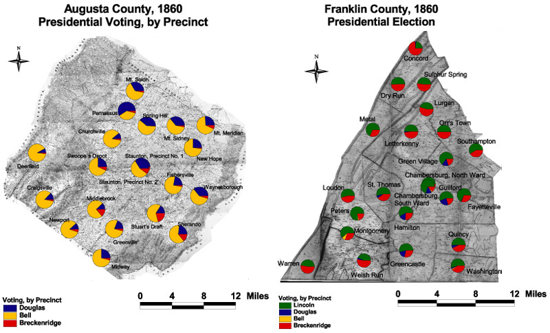

Franklin and Augusta: Presidential Voting by Precinct,
1860
These maps compare 1860 presidential voting by precinct
in Augusta and Franklin. Bell's overwhelming victory in Augusta
overshadows subtle electoral patterns in the
Douglas-Breckinridge-Bell split. The Democratic candidates together
captured significant votes in Staunton and in the eastern and
northern parts of the county, the broad middle part of the Valley
just east of Staunton. In Franklin, Lincoln's support came from the
broad middle of the county, centered in places with visible African
American populations, such as Southampton, Montgomery, and the
South Ward of Chambersburg.

The maps are derived from a D. H. Davison map of
Franklin County, published in 1858 and a Jedediah Hotchkiss map of
Augusta County, published in 1870 and based on surveys completed
"during the war." The maps have been georeferenced at the Virginia
Center for Digital History, using ESRI Arc Info to produce a
Geographic Information Systems map and database of
households.